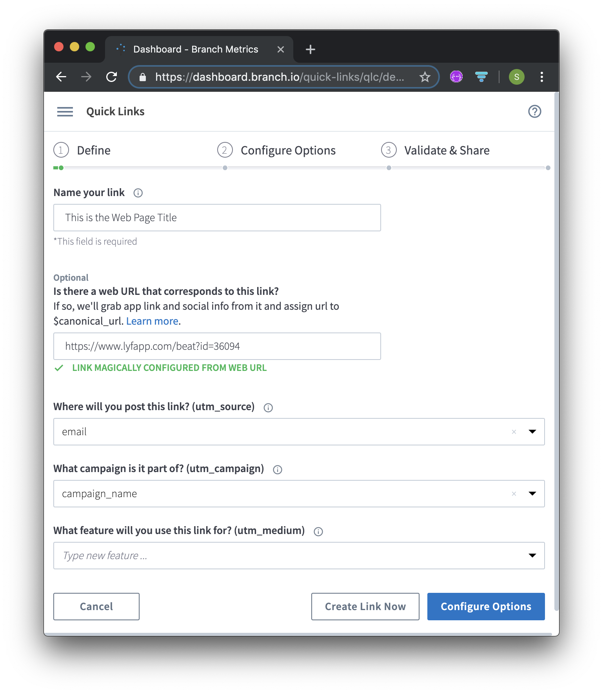

There are multiple deep link types supported in Lyf, and they will behave in different ways depending on where they are clicked and the state of the app installation on the phone.
| Deep Link Type | Example | Desktop click | Phone click. App not installed (deferred linking) * | Phone click. App installed * | Notes |
|---|---|---|---|---|---|
| Custom Scheme | lyfapp://li.nk/beat?id=36094 |
not clickable | not clickable | Opens desired content in app | This is added as it is required by Branch for some links |
| Universal Link | https://www.lyfapp.com/beat?id=36094 |
Opens Lyf homepage | Sends user to Apple App Store / Google Play Store | Opens desired content in app | This is the standard deep linking supported by Android & iOS |
| Branch Link | https://lyfapp.app.link/seeing_a_married_man |
Opens Lyf homepage | Takes user to App Store / Play Store. When app has installed, takes user to desired content in app | Opens desired content in app | Requires links to be generated on Branch service including metadata containing the desired Universal Link |
* The installed version of the app must be able to handle deep-links. Previous versions of Lyf which do not handle deep-linking will have the same behaviour as not having the app installed at all.
Our universal links will open specific content in the app. These links must conform to a certain format to work in the app.
The format is:
https://www.lyfapp.com/{action}?{parameter1} &{parameter2}
i.e.
https://www.lyfapp.com/beat?id=36094 will open the beat with id=36094 in a
JourneyDetailController.
beatfilterlyfsupportcreatebeatFor a BEAT link:
id={journeyIdNumber}post={postNumber}For a FILTER link:
Must specify the filter type with filter=. Possible values are:
filter=allfilter=followingfilter=newfilter=welcomefilter=categoriesFor a LYFSUPPORT link:
No parameters required
For a CREATEBEAT link:
No parameters required
If it’s a categories filter, a second parameter must specify the category name with
category={name}:
filter=categories&category=relationshipsThe category name must be an exact match to one of the categories listed in the app (but lowercase).
For example, relationships is correct, but relationship will not work
N.B. If there are spaces, ampersands or other special characters that cannot be represented in a URL, these will need to be URI Encoded.
This means that special characters are changed to a % followed by a code number, for example:
(space) ==> %20& ==> %26For example, the category healthy living & wellness will be URI encoded to healthy%20living%20%26%20wellness
A website like this can be used to help encode the category name.
Putting parameters
together -- Parameters start with a '?'. Multiple parameters are seperated by an
'&'
So, putting it all together:
https://www.lyfapp.com/{action}?{parameter1} &{parameter2}
For examples, see the test cases below.
Using the Branch deep linking service, we can send a user to specific content within the app, whether they have the app installed or not! For this to work, the links must be created within the Branch service. This is typically done through the Branch Dashboard (but can also be done through their API).
Select the correct environment for link creation, either TEST or LIVE. The LIVE environment should only contain links used in the production environment to avoid inadvertent linking.
The following steps are reached through the following menu options:
/{action}?{parameter} part (in this case /beat?id=36094).
$deeplink_pathand Value =
{action}?{parameter} the same as in the $canonical_url. The App will
preferentially use this field first and use the $canonical_url as a fallback.$og_type is populated here by default. This is the Facebook OpenGraph
type and can just as well be deleted, or changed to *applinkThe app also supports a custom URI Schema lyfapp:// which would look like:
lyfapp://{any host}/{action}?{parameter}
There needs to be some sort of made up host name, I suggest li.nk.
i.e. lyfapp://li.nk/beat?id=36094 would open beat 36094 in the app